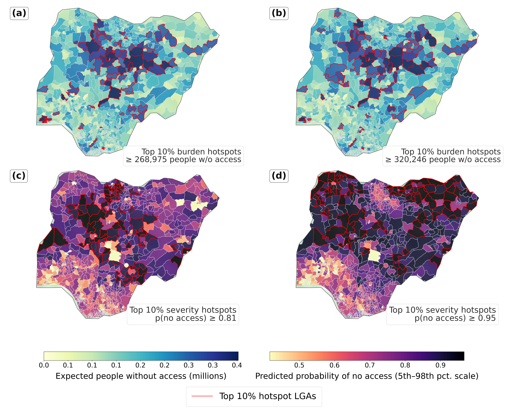

Seeing SDG 6 from space: local-scale monitoring of piped water and sewage system access across Africa using satellite imagery and self-supervised learning
*Equal contribution | † Corresponding author
1 McGill University | 2 Mila - AI Quebec Institute | 3 Columbia University | 4 Duke Kunshan University

Pipeline overview for satellite-based SDG 6 monitoring.
Abstract
Access to drinking water and sanitation remains highly unequal, while SDG 6 monitoring still relies on costly, infrequent, and spatially uneven surveys with substantial reporting delays. This study develops a scalable remote-sensing framework to estimate piped water and sewage system access at approximately 2.56 km resolution using Sentinel-2 imagery, Afrobarometer survey responses, 30 m population data, and DINO self-supervised Vision Transformer features, achieving AUROC values of 91.54% for piped water and 93.24% for sewage access. Across 50 African countries and a Nigeria case study of 767 LGAs, the framework aligns strongly with JMP statistics, captures fine-scale environmental inequality, and provides low-cost, spatially detailed evidence for SDG 6 monitoring, infrastructure targeting, and environmental equity assessment.
BibTeX
@article{echchabi2026sdg6,
title = {Seeing SDG 6 from space: local-scale monitoring of piped water and sewage system access across Africa using satellite imagery and self-supervised learning},
author = {Echchabi, Othmane and Lahlou, Aya and Talty, Nizar and Manto, Josh Malcolm and Zheng, Tongshu and Lam, Ka Leung},
journal = {arXiv preprint arXiv:2411.19093},
year = {2026}
}
Acknowledgements
We thank our collaborators and partner institutions at DKU and Columbia for their support and feedback.
Nigeria LGA-level hotspot analysis
